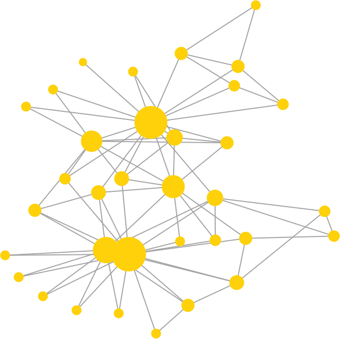
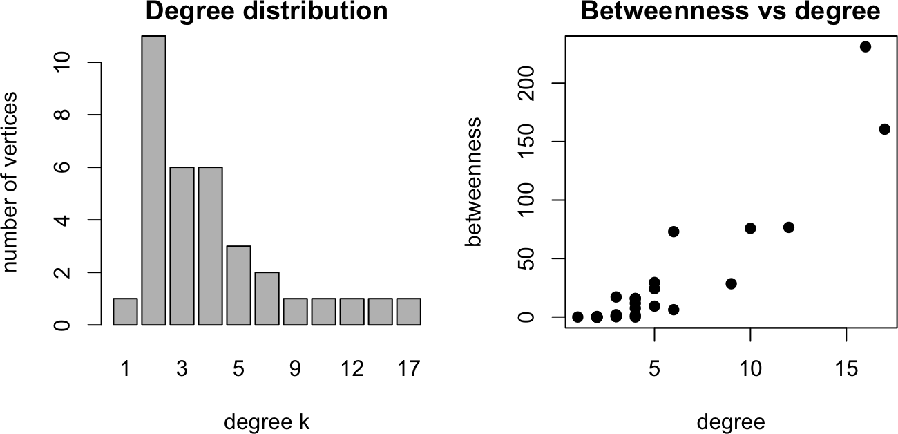
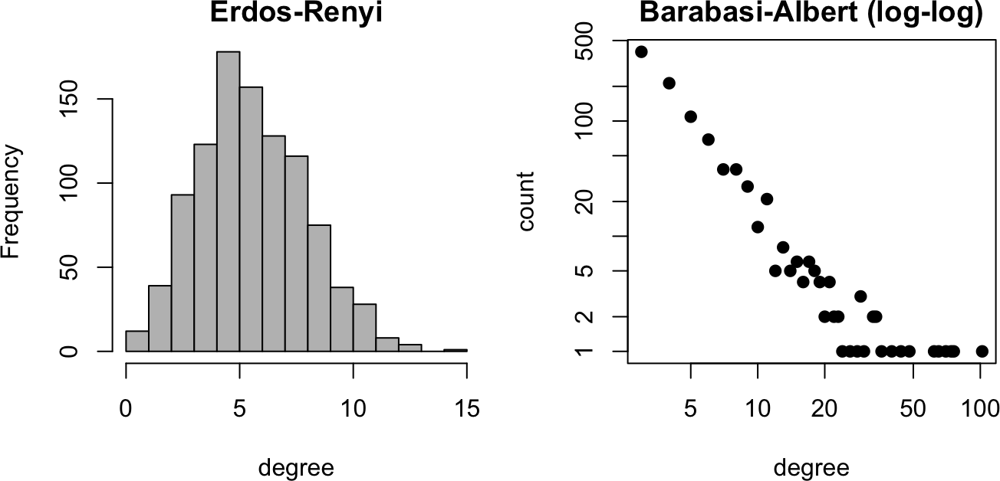
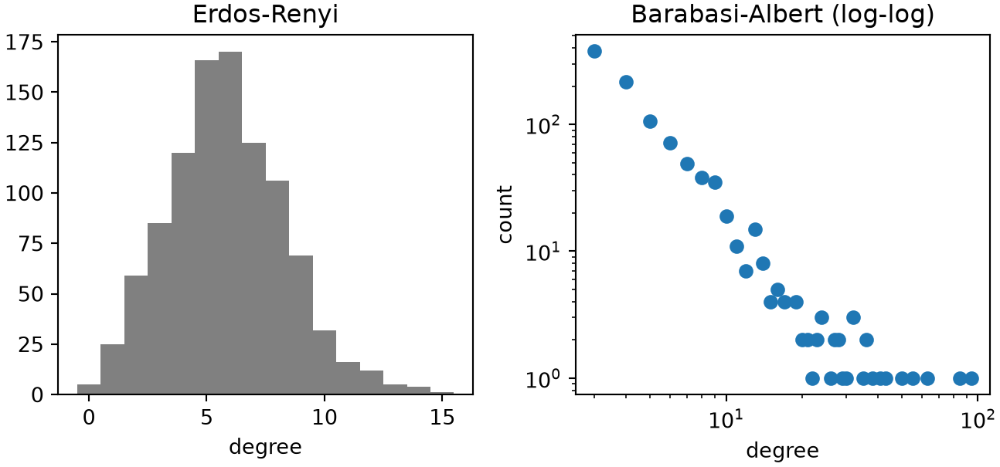
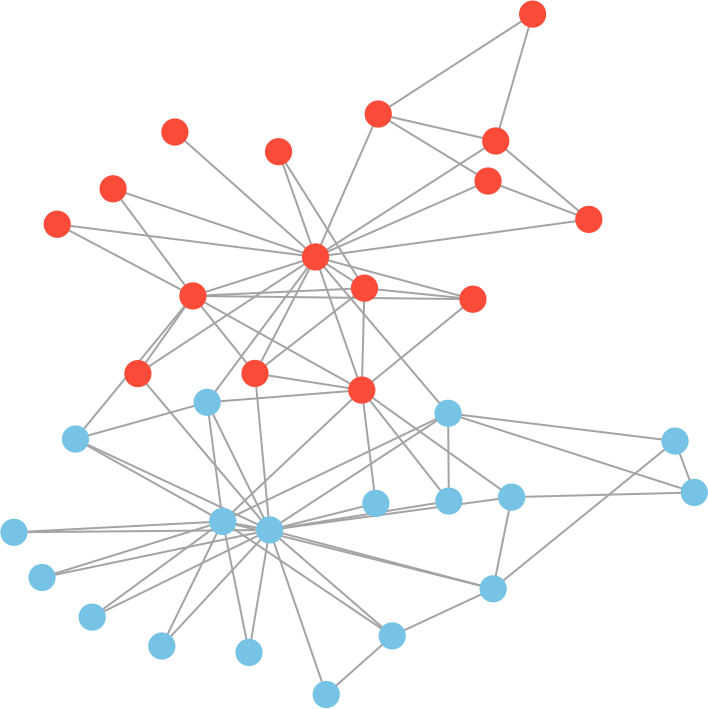
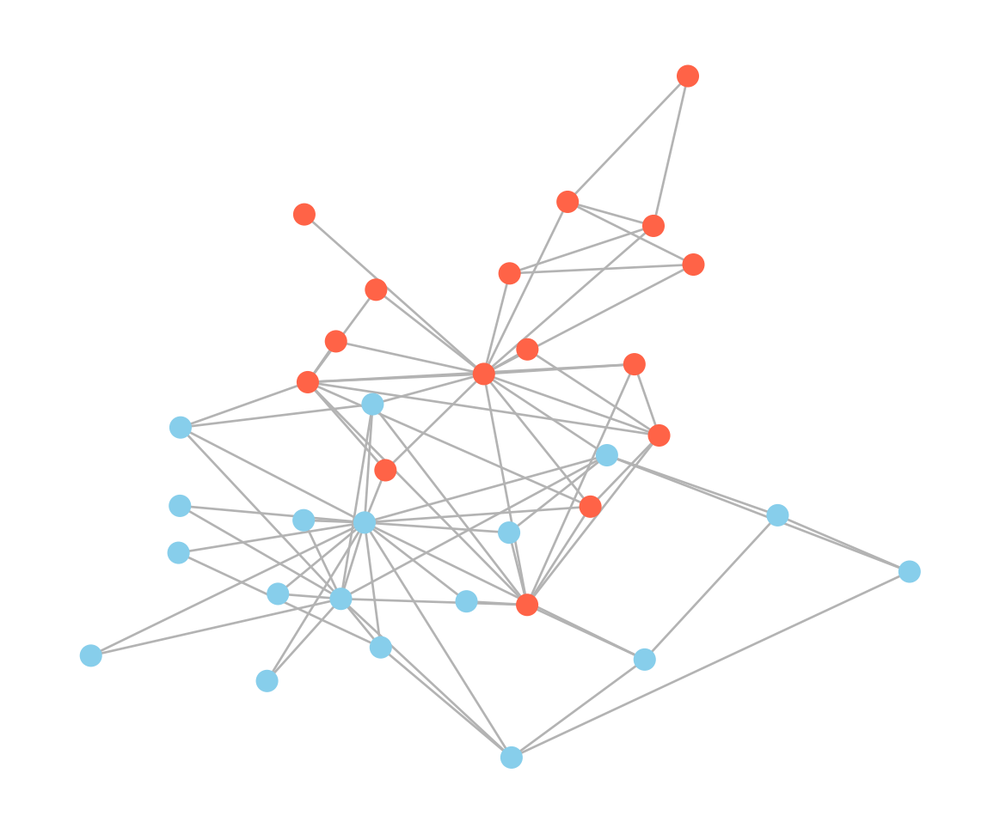

Many biological systems are naturally described as networks: protein-protein interaction networks, gene regulatory networks, metabolic networks, and cell-signaling networks all connect components (genes, proteins, metabolites) by their interactions (Barabási and Oltvai 2004). A network, or graph, is a set of vertices (nodes) joined by edges. This chapter represents networks as adjacency matrices, computes their structural properties, generates random-network models, detects community structure by modularity, and models discrete gene-regulatory dynamics with Boolean networks. We compute the core quantities from scratch and use igraph (R) and networkx (Python) for graph layout and the longer standard algorithms.
10C.1 Networks and their properties
A network of \(n\) vertices is stored as an \(n \times n\)adjacency matrix\(A\), with \(A_{ij} = 1\) when vertices \(i\) and \(j\) are connected and 0 otherwise (symmetric for an undirected network). From \(A\) we read off the basic structure. The degree of a vertex is its number of neighbors, \(k_i = \sum_j A_{ij}\). The clustering coefficient measures how interconnected a vertex’s neighbors are: for a vertex of degree \(k\) with \(e\) edges among its neighbors, \(c = e / \binom{k}{2}\). The distance between two vertices is the length of the shortest path between them, and the diameter is the largest such distance. We illustrate on Zachary’s karate club (Zachary 1977), a classic 34-member social network, drawn with the Kamada-Kawai layout (Kamada and Kawai 1989): unlike a force-directed layout, this is a deterministic stress-majorization of the shortest-path distances, so the R and Python renderings closely agree instead of depending on each library’s own stochastic algorithm.
NoteRecipe 10C.1.1
Objective. Compute the structural properties of a network.
Model. The input is an undirected adjacency matrix; the example is Zachary’s karate club (34 vertices).
Method. Network properties computed from scratch: degree distribution, clustering coefficient, shortest-path distance matrix, and diameter, plus betweenness centrality.
Test. Zachary’s karate club, drawn with a Kamada-Kawai layout.
Show. The printed degree, clustering, diameter, and betweenness, and the network drawn with a Kamada-Kawai layout.
Verification. The club has a few high-degree hubs, mean degree about 4.6, diameter 5, and clustering about 0.57, and the two highest-betweenness nodes are the instructor and president who bridge the factions.
R implementation
library(igraph)g <-make_graph("Zachary"); A <-as.matrix(as_adjacency_matrix(g)); n <-nrow(A)degree_v <-rowSums(A) # degree of each vertex# clustering coefficient (averaged over all vertices; degree < 2 contributes 0)clustering <-function(A) {mean(sapply(1:nrow(A), function(u) { nb <-which(A[u, ] >0); k <-length(nb)if (k <2) 0elsesum(A[nb, nb]) /2/ (k * (k -1) /2) }))}# shortest-path distances via boolean adjacency powers; diameter = largest distancedist_matrix <-function(A) { n <-nrow(A); D <-matrix(Inf, n, n); diag(D) <-0; reach <-diag(n)for (l in1:(n -1)) { reach <- (reach %*% A) >0; D[D ==Inf& reach] <- l } D}D <-dist_matrix(A)cat("mean degree:", round(mean(degree_v), 2), " clustering:", round(clustering(A), 3)," diameter:", max(D[is.finite(D)]), "\n")
mean degree: 4.59 clustering: 0.571 diameter: 5
bc <-betweenness(g) # betweenness (igraph)# Kamada-Kawai layout: a deterministic stress-majorization of the shortest-path distances# computed above (no random initialization), so it reproduces closely in Python, unlike a# force-directed layout; unlike raw classical MDS, it also optimizes for readability, so# nodes spread out instead of clusteringlay <-layout_with_kk(g)plot(g, vertex.size =4+ degree_v, vertex.color ="gold", vertex.frame.color =NA,vertex.label =NA, edge.color ="#B3B3B3", layout = lay)

par(mfrow =c(1, 2), mar =c(4, 4, 2, 1))barplot(table(degree_v), xlab ="degree k", ylab ="number of vertices", main ="Degree distribution")plot(degree_v, bc, xlab ="degree", ylab ="betweenness", main ="Betweenness vs degree", pch =19)

Python implementation
import numpy as np, networkx as nx, matplotlib.pyplot as pltG = nx.karate_club_graph(); A = nx.to_numpy_array(G, weight=None); n =len(A)degree_v = A.sum(1).astype(int) # degree of each vertex# clustering coefficient (averaged over all vertices; degree < 2 contributes 0)def clustering(A): n =len(A); c = np.zeros(n)for u inrange(n): nb = np.where(A[u] >0)[0]; k =len(nb)if k >=2: c[u] = A[np.ix_(nb, nb)].sum() /2/ (k * (k -1) /2)return c.mean()# shortest-path distances via boolean adjacency powers; diameter = largest distancedef dist_matrix(A): n =len(A); D = np.full((n, n), np.inf); np.fill_diagonal(D, 0); reach = np.eye(n)for l inrange(1, n): reach = (reach @ A) >0; D[(D == np.inf) & reach] = lreturn DD = dist_matrix(A)print("mean degree:", round(degree_v.mean(), 2), " clustering:", round(clustering(A), 3)," diameter:", int(D[np.isfinite(D)].max()))
mean degree: 4.59 clustering: 0.571 diameter: 5
bc = np.array(list(nx.betweenness_centrality(G).values())) # betweenness (networkx)# Kamada-Kawai layout: a deterministic stress-majorization of the graph's shortest-path# distances (no random initialization), so it reproduces closely in R, unlike a# force-directed layout; unlike raw classical MDS, it also optimizes for readability, so# nodes spread out instead of clusteringpos = nx.kamada_kawai_layout(G)plt.figure(figsize=(6, 5))# node_size is an AREA in networkx (vs. a diameter-like scale in igraph's vertex.size),# so square the same "4 + degree" formula used in R to match the visual size contrastnx.draw(G, pos, node_size=(4+ degree_v) **2*1.2, node_color="gold", edge_color="#B3B3B3")plt.show()
The karate club has a few high-degree hubs and many low-degree members, a mean degree near 4.6, a diameter of 5, and a fairly high clustering coefficient (about 0.57): friends of friends tend to be friends, a hallmark of the “small-world” networks of Watts and Strogatz (Watts and Strogatz 1998). Betweenness, the number of shortest paths passing through a vertex (Freeman 1977), tracks degree loosely but not exactly; the two highest-betweenness nodes are the instructor and the club president, the bridges through which most paths run.
10C.2 Random-network models
To judge whether a real network’s structure is surprising, we compare it with random models. The Erdős-Rényi model (Erdős and Rényi 1959) connects each pair of vertices independently with probability \(p\), giving a Poisson-like degree distribution peaked at the mean. The Barabási-Albert model (Barabási and Albert 1999) grows a network by preferential attachment: each new vertex attaches to \(m\) existing ones with probability proportional to their degree, so hubs accumulate ever more connections. This produces a scale-free degree distribution with a heavy, power-law tail, closer to what many biological networks show. Both generators are short to write.
NoteRecipe 10C.2.1
Objective. Generate random networks from two classic models and compare their degree distributions.
Model. The Erdos-Renyi model G(n, p) connects each vertex pair independently with probability p; the Barabasi-Albert model grows by attaching each new vertex to m existing ones with probability proportional to their degree (preferential attachment).
Method. The Erdos-Renyi and Barabasi-Albert random-network models, implemented from scratch.
Test.n = 1000; Erdos-Renyi with p = 0.006, Barabasi-Albert with m = 3; seed 1.
Show. The degree distributions: a histogram for Erdos-Renyi and a log-log scatter for Barabasi-Albert.
Verification. Erdos-Renyi degrees cluster tightly around the mean, while Barabasi-Albert degrees follow a straight line on log-log axes (a scale-free power law), matching biological networks better.
R implementation
# Erdos-Renyi: connect each pair with probability per_network <-function(n, p) { A <-matrix(0, n, n); ut <-upper.tri(A) A[ut] <-rbinom(sum(ut), 1, p); A +t(A)}# Barabasi-Albert: grow by preferential attachment (m links per new vertex)ba_network <-function(n, m) { A <-matrix(0, n, n); A[1:(m +1), 1:(m +1)] <-1; diag(A) <-0# seed cliquefor (v in (m +2):n) { deg <-rowSums(A)[1:(v -1)] targets <-sample(1:(v -1), m, prob = deg) # attach prop. to degree A[v, targets] <-1; A[targets, v] <-1 } A}
set.seed(1)er <-er_network(1000, 0.006); ba <-ba_network(1000, 3)par(mfrow =c(1, 2), mar =c(4, 4, 2, 1))hist(rowSums(er), breaks =20, main ="Erdos-Renyi", xlab ="degree", col ="grey")# plot(table(...)) draws value-to-zero bars, which log-scaling breaks (log(0) = -Inf);# plot the (degree, count) points directly instead, as a proper log-log scatterba_tab <-table(rowSums(ba))plot(as.numeric(names(ba_tab)), as.numeric(ba_tab), log ="xy", pch =19,main ="Barabasi-Albert (log-log)", xlab ="degree", ylab ="count")

Python implementation
# Erdos-Renyi: connect each pair with probability pdef er_network(n, p):# compare to p FIRST, then restrict to the upper triangle -- np.triu(rand, 1) zeroes# the lower triangle before comparing, so those zeros would wrongly satisfy `< p` A = np.triu((np.random.rand(n, n) < p).astype(int), 1);return A + A.T# Barabasi-Albert: grow by preferential attachment (m links per new vertex)def ba_network(n, m): A = np.zeros((n, n), int); A[:m +1, :m +1] =1; np.fill_diagonal(A, 0) # seed cliquefor v inrange(m +1, n): deg = A[:v].sum(1) targets = np.random.choice(v, m, replace=False, p=deg / deg.sum()) # attach prop. to degree A[v, targets] =1; A[targets, v] =1return A
np.random.seed(1)er = er_network(1000, 0.006); ba = ba_network(1000, 3)fig, axs = plt.subplots(1, 2, figsize=(7, 3.4))er_deg = er.sum(1)# bin edges at half-integers so each bin holds exactly one degree value; bins=20 alone# misaligns with these integer degrees and leaves visible gaps between some barsbins = np.arange(er_deg.min(), er_deg.max() +2) -0.5axs[0].hist(er_deg, bins=bins, color="grey"); axs[0].set(title="Erdos-Renyi", xlabel="degree")v, c = np.unique(ba.sum(1), return_counts=True)axs[1].loglog(v, c, "o"); axs[1].set(title="Barabasi-Albert (log-log)", xlabel="degree", ylabel="count")plt.tight_layout(); plt.show()

The Erdős-Rényi degrees cluster tightly around the mean, so a highly connected hub is essentially impossible. The Barabási-Albert degrees instead fall off as a straight line on log-log axes, the signature of a power law: most vertices have few links but a few hubs have very many. Biological networks such as protein interaction networks resemble the scale-free model far more than the random one, which is why hubs (often essential genes) are a recurring theme.
10C.3 Community detection by modularity
Networks often divide into communities, groups of vertices more densely connected among themselves than to the rest. Newman’s modularity\(Q\) measures how good a division is, comparing the fraction of edges inside groups with the fraction expected if edges were placed at random while preserving degrees (Newman 2006),
where \(m\) is the number of edges, \(k_i\) the degree of vertex \(i\), and \(\delta(c_i, c_j)\) is 1 when \(i\) and \(j\) are in the same community. Newman’s spectral method splits a network in two using the modularity matrix\(B_{ij} = A_{ij} - k_i k_j / 2m\): the signs of the leading eigenvector of \(B\) assign vertices to the two groups, the division that best increases \(Q\).
NoteRecipe 10C.3.1
Objective. Split a network into communities by maximizing modularity.
Model. The input is the karate-club adjacency matrix; the modularity objective is Q = (1/2m)*sum_ij (A_ij - k_i*k_j/2m)*delta(c_i, c_j).
Method. Newman spectral community detection (bisection by the leading eigenvector of the modularity matrix), with the eigenvector sign fixed so the labeling is reproducible.
Test. Zachary’s karate club, drawn with the same Kamada-Kawai layout as 10C.1.
Show. The network drawn with nodes colored by community, and the modularity Q.
Verification. The spectral split separates the club into communities of 18 and 16 with modularity about 0.37, closely matching the factional split Zachary recorded.
R implementation
# modularity of a given community assignment (Eq. 1)modularity_Q <-function(A, membership) { m <-sum(A) /2; k <-rowSums(A) B <- A -outer(k, k) / (2* m)sum(B *outer(membership, membership, "==")) / (2* m)}# Newman spectral bisection: sign of the leading eigenvector of the modularity matrix.# An eigensolver may return either v or -v equally validly, so fix a sign convention# (vertex 1 always in group 1) to make the assignment reproducible across languages.spectral_split <-function(A) { m <-sum(A) /2; k <-rowSums(A) B <- A -outer(k, k) / (2* m) v <-eigen(B, symmetric =TRUE)$vectors[, 1]if (v[1] <0) v <--vifelse(v >0, 1, 2)}comm <-spectral_split(A)cat("community sizes:", table(comm), " modularity Q:", round(modularity_Q(A, comm), 3), "\n")
community sizes: 16 18 modularity Q: 0.371
plot(g, vertex.color =c("tomato", "skyblue")[comm], vertex.size =8, vertex.frame.color =NA,vertex.label =NA, edge.color ="#B3B3B3", layout = lay) # same layout as 10C.1

Python implementation
# modularity of a given community assignment (Eq. 1)def modularity_Q(A, membership): m = A.sum() /2; k = A.sum(1); B = A - np.outer(k, k) / (2* m) same = membership[:, None] == membership[None, :]return (B * same).sum() / (2* m)# Newman spectral bisection: sign of the leading eigenvector of the modularity matrix.# An eigensolver may return either v or -v equally validly, so fix a sign convention# (vertex 1 always in group 1) to make the assignment reproducible across languages.def spectral_split(A): m = A.sum() /2; k = A.sum(1); B = A - np.outer(k, k) / (2* m) v = np.linalg.eigh(B)[1][:, -1]if v[0] <0: v =-vreturn (v >0).astype(int)comm = spectral_split(A)print("community sizes:", np.bincount(comm), " modularity Q:", round(modularity_Q(A, comm), 3))
community sizes: [18 16] modularity Q: 0.371
plt.figure(figsize=(6, 5))nx.draw(G, pos, node_color=["tomato"if c else"skyblue"for c in comm], node_size=8**2*1.2, edge_color="#B3B3B3")plt.show()

The spectral split cleanly separates the karate club into two communities of sizes 18 and 16, with modularity \(Q \approx 0.37\), and this partition closely matches the actual split of the club into two factions after a dispute, the outcome Zachary recorded. For more than two communities one applies the bisection recursively or uses a fast optimizer such as the Louvain method (Blondel et al. 2008) (cluster_louvain in igraph, greedy_modularity_communities in networkx), which we would reach for on larger networks.
10C.4 Boolean network models
Gene regulatory networks can be modeled without kinetic parameters by treating each gene as either on (1) or off (0) and updating its state by a logical rule of its regulators’ states (Kauffman 1969). The system state is a binary vector; in synchronous updating, every gene is updated together at each discrete time step, \(x_i(t+1) = f_i(\mathbf{x}(t))\). Iterating from any start eventually falls into an attractor: a fixed point (a steady state, \(\mathbf{x}(t+1) = \mathbf{x}(t)\)) or a cycle (an oscillation). We enumerate the attractors by running every possible initial state to its repeat, then apply this to two circuits already studied as continuous systems in Part 3H: a toggle switch and a repressilator.
NoteRecipe 10C.4.1
Objective. Enumerate the attractors of a Boolean network.
Model. A Boolean network: each gene is on or off and updates synchronously by x_i(t+1) = f_i(x(t)); iterating from any start falls into a fixed-point or cyclic attractor.
Method. Boolean network dynamics with synchronous updating, enumerating attractors exhaustively from all initial states.
Test. The generic boolean_attractors(update, n) driver, which runs every one of the 2^n start states to its first repeat.
Show. The attractors enumerated for a given update rule (applied in 10C.5 and 10C.6).
Verification. The routine returns every fixed-point and cyclic attractor, ready to apply to specific circuits.
R implementation
# enumerate attractors: run every start state to the first repeat; the cycle is the attractorboolean_attractors <-function(update, n) { states <-as.matrix(expand.grid(rep(list(0:1), n))); found <-list()for (r in1:nrow(states)) { s <- states[r, ]; seen <-character(0); traj <-list()repeat { key <-paste(s, collapse ="")if (key %in% seen) { cyc <- traj[which(seen == key):length(seen)] canon <-paste(sort(sapply(cyc, paste, collapse ="")), collapse ="|")if (is.null(found[[canon]])) found[[canon]] <- cycbreak } seen <-c(seen, key); traj[[length(traj) +1]] <- s; s <-update(s) } } found}show_att <-function(a) sapply(a, function(cyc) paste0("{", paste(sapply(cyc, paste, collapse =""), collapse =" -> "), "}"))
Python implementation
# enumerate attractors: run every start state to the first repeat; the cycle is the attractorfrom itertools import productdef boolean_attractors(update, n): found = {}for s0 in product([0, 1], repeat=n): s =list(s0); seen = []whileTrue: key =tuple(s)if key in seen: cyc = seen[seen.index(key):]; found[tuple(sorted(cyc))] = cyc;break seen.append(key); s = update(s)returnlist(found.values())def show_att(a):return [" {"+" -> ".join("".join(map(str, s)) for s in cyc) +"}"for cyc in a]
10C.5 Toggle switch
A toggle switch is two genes that mutually repress each other:
Its Boolean form reduces each gene to on or off; applying boolean_attractors to this update rule enumerates all its attractors from every one of the 4 possible starting states.
NoteRecipe 10C.5.1
Objective. Find the attractors of a Boolean toggle switch.
Model. A Boolean toggle switch of two mutually repressing genes, X(t+1) = NOT Y(t), Y(t+1) = NOT X(t).
Method. Boolean attractor enumeration (from 10C.4) over all four states.
Test. The toggle-switch update rule on n = 2 genes.
Show. The toggle switch’s attractors printed as arrow chains.
Verification. It finds two fixed points, 01 and 10 (the mutually exclusive on-states of a bistable switch), and an oscillation 00 -> 11 -> 00.
R implementation
# toggle switch: two mutually repressing genes, X = NOT Y, Y = NOT Xtoggle <-function(s) c(1- s[2], 1- s[1])show_att(boolean_attractors(toggle, 2))
00|11 10 01
"{00 -> 11}" "{10}" "{01}"
Python implementation
# toggle switch: two mutually repressing genes, X = NOT Y, Y = NOT Xtoggle =lambda s: [1- s[1], 1- s[0]]print(show_att(boolean_attractors(toggle, 2)))
[' {11 -> 00}', ' {01}', ' {10}']
The toggle switch has two attractors:
Fixed points: 01 and 10, the two mutually exclusive on-states of a bistable switch
Oscillation: 00 -> 11 -> 00, a two-state cycle
10C.6 Boolean repressilator
A repressilator is a ring of three repressions, each gene repressing the next:
Its continuous version oscillates on a limit cycle (Elowitz and Leibler 2000); the Boolean version has the same three-gene ring topology, reduced to on/off states.
NoteRecipe 10C.6.1
Objective. Find the attractors of a Boolean repressilator.
Model. A Boolean repressilator, a ring of three repressions, X(t+1) = NOT Z(t), Y(t+1) = NOT X(t), Z(t+1) = NOT Y(t).
Method. Boolean attractor enumeration (from 10C.4) over all eight states.
Test. The repressilator update rule on n = 3 genes.
Show. The repressilator’s attractors printed as arrow chains.
Verification. It finds no fixed points, only two cyclic attractors: 000 -> 111 -> 000 and a six-state cycle, the discrete analog of the continuous limit cycle.
R implementation
# repressilator: a ring of three repressions, X -| Y -| Z -| Xrepressilator <-function(s) c(1- s[3], 1- s[1], 1- s[2])show_att(boolean_attractors(repressilator, 3))
# repressilator: a ring of three repressions, X -| Y -| Z -| Xrepressilator =lambda s: [1- s[2], 1- s[0], 1- s[1]]print(show_att(boolean_attractors(repressilator, 3)))
The Boolean repressilator has no fixed points, only two cyclic attractors:
000 -> 111 -> 000, a short two-state oscillation
100 -> 101 -> 001 -> 011 -> 010 -> 110 -> 100, a six-state cycle, the discrete analog of the continuous limit cycle
Despite their extreme simplicity, Boolean networks reproduce the qualitative dynamics of real regulatory circuits: Li et al. showed that the Boolean network of the yeast cell cycle has a single dominant attractor corresponding to the biological cell-cycle sequence (Li et al. 2004), evidence that the network’s wiring, not finely tuned parameters, sets its behavior.
Barabási, Albert-László, and Zoltán N. Oltvai. 2004. “Network Biology: Understanding the Cell’s Functional Organization.”Nature Reviews Genetics 5 (2): 101–13. https://doi.org/10.1038/nrg1272.
Blondel, Vincent D., Jean-Loup Guillaume, Renaud Lambiotte, and Etienne Lefebvre. 2008. “Fast Unfolding of Communities in Large Networks.”Journal of Statistical Mechanics: Theory and Experiment 2008 (10): P10008. https://doi.org/10.1088/1742-5468/2008/10/P10008.
Elowitz, Michael B., and Stanislas Leibler. 2000. “A Synthetic Oscillatory Network of Transcriptional Regulators.”Nature 403 (6767): 335–38. https://doi.org/10.1038/35002125.
Erdős, Paul, and Alfréd Rényi. 1959. “On Random Graphs i.”Publicationes Mathematicae Debrecen 6: 290–97.
Freeman, Linton C. 1977. “A Set of Measures of Centrality Based on Betweenness.”Sociometry 40 (1): 35–41. https://doi.org/10.2307/3033543.
Kamada, Tomihisa, and Satoru Kawai. 1989. “An Algorithm for Drawing General Undirected Graphs.”Information Processing Letters 31 (1): 7–15. https://doi.org/10.1016/0020-0190(89)90102-6.
Kauffman, Stuart A. 1969. “Metabolic Stability and Epigenesis in Randomly Constructed Genetic Nets.”Journal of Theoretical Biology 22 (3): 437–67. https://doi.org/10.1016/0022-5193(69)90015-0.
Li, Fangting, Tao Long, Ying Lu, Qi Ouyang, and Chao Tang. 2004. “The Yeast Cell-Cycle Network Is Robustly Designed.”Proceedings of the National Academy of Sciences 101 (14): 4781–86. https://doi.org/10.1073/pnas.0305937101.
Newman, Mark E. J. 2006. “Modularity and Community Structure in Networks.”Proceedings of the National Academy of Sciences 103 (23): 8577–82. https://doi.org/10.1073/pnas.0601602103.
Watts, Duncan J., and Steven H. Strogatz. 1998. “Collective Dynamics of ‘Small-World’ Networks.”Nature 393 (6684): 440–42. https://doi.org/10.1038/30918.
Zachary, Wayne W. 1977. “An Information Flow Model for Conflict and Fission in Small Groups.”Journal of Anthropological Research 33 (4): 452–73. https://doi.org/10.1086/jar.33.4.3629752.